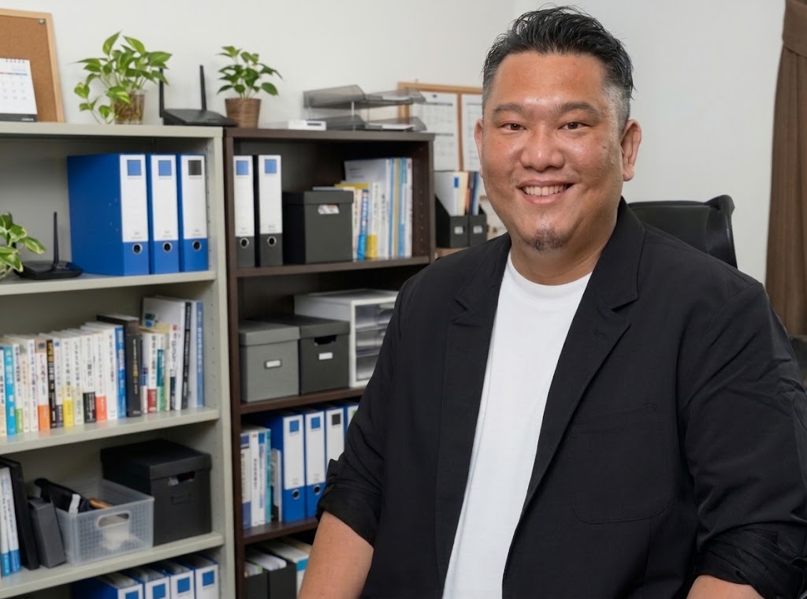

COMPANY
人と組織の「欲しい未来」を、ともにつくる。
株式会社ムーンブラスト希爆は、子どもから大人、組織まで、それぞれが望む未来の実現を支える会社です。
「一生使える、自分の育て方」を体系化した希爆Styleを共通の土台に、塾・コーチング・人材コンサル・講演・研修を届けます。
私たちの信念
無限の可能性を開く。
今の姿やこれまでの経験だけで、人の可能性を決めない。
今望んでいる未来を目指す中で、新しい選択肢や、自分でも気づいていなかった力に出会う。私たちは、その先に広がる可能性も大切にします。
お客様に届ける価値
一生使える、自分の育て方。
何を望み、どう進むかを考える。必要なことを学び、人の力も借りながら試し、経験から次の一歩を選ぶ。
希爆Styleを通してその力を育て、家庭や職場で力を発揮できる環境を整えます。
支援の土台
約15年間の教育実践から生まれた、希爆Style。
代表・佐野伸之が、子ども一人ひとりと学級全体の成長に向き合い、積み重ねた実践を体系化。個人への支援と集団づくりの両方で培った経験をもとに、それぞれの目的と状況に合わせて支援を組み立てます。
私たちが目指す社会
一人の成長を、周りの人の可能性へ。
子どもの挑戦を見守る保護者に、時間と心の余白が生まれる。社員が力を発揮し、会社が新しい価値を生み出す。一人の挑戦が、誰かの「自分もやってみたい」につながる。
私たちは、そんな未来を目指しています。一人ひとりの望む未来を支える仕事を通じて、家庭・学校・職場へ、成長と希望を広げていきます。
PRESIDENT

代表取締役 佐野 伸之
約15年間の教育実践を、人と組織の「これから」へ。
小学校教員として約15年間、子ども一人ひとりの学びと、互いに支え合う集団づくりに向き合ってきました。子どもが自分で考え、選び、動き出すために、何を教え、どこを支え、何を任せるか。その実践を重ね、希爆Styleを体系化しました。
現在は、塾・コーチング・人材コンサル・講演・研修を通して、子どもから大人、組織まで、それぞれが望む未来の実現を支援しています。
希爆Style開発者 ／ 教育実践家
- 未来チケットアンバサダー 第1号
- ギフテッド教育公認アドバイザー
Kindle出版
うちの子は、壊れていない 止まっているだけ?!
約15年間の教育実践から、子どもが動き出すための見方と関わり方を伝える一冊。
- 7冠｜Amazonランキング1位
- 2冠｜ベストセラー
2026年10月時点。7冠には売れ筋ランキングと最新リリースランキングを含みます。ベストセラーは「企業倫理」「ビジネスの意思決定」の2部門。
掲載・発信活動
- WEBプラットフォーム「KIZUNA EXECUTIVE」インタビュー掲載
- ポッドキャスト番組「みらいVision 発掘コーチング：5年後のわたしたちへ」月1レギュラー
- YouTube「題名は未定」
- ライブドアニュース掲載 「子どもは壊れていない」自発的な変化を促す鍵
CONCEPT
一生使える、自分の育て方「希爆Style」。
いま叶えたいことに向かいながら、その先の挑戦にも使える力を育てる。
自分の強みを生かして働きたい。新しいことに挑戦したい。子どもや仲間の可能性を、もっと広げたい。
希爆Styleが出発点にするのは、その人や組織が望む未来です。必要なことを学び、自分で選び、行動し、経験から次の成長につなげる。その力と、それを支える関わり方を、約15年間の教育実践から体系化しました。
自分を知り、選択肢を広げる
自分の可能性に気づく。
何が得意で、何を大切にしているのか。どんなときに力を発揮できるのか。自分の経験や周囲の環境を見直すことで、まだ気づいていなかった強みや、選べる道を見つけていきます。
今望んでいる未来へ進む中で、やってみたいことや、目指したい未来そのものも広がっていきます。
五つの領域・30のスキル
望む未来に向かう力を身につける。
自分の願いを行動に変えるには、状況を捉え、方法を考え、選び、伝え、周囲と協力する力が必要です。希爆Styleでは、成長を支えるスキルを五つの領域に整理しています。
- 見る・考える力
- 判断し、選ぶ力
- 表現し、伝える力
- 他者と関わる力
- 自分を育てる力
必要な力を選んで学び、勉強や仕事、日常の場面で使っていきます。自分一人では難しいときに、人に学び、必要な助けを借りることも、その力の一つです。
挑戦と振り返りの循環
経験を、次の成長に変える。
何ができたのか。どんな工夫が役立ったのか。難しかったところはどこか。その経験から気づきを見つけ、次に試すことを選びます。
見る → 広がる → 選ぶ → 試す → 振り返る → 気づく → また見る
うまくいった経験も、思うように進まなかった経験も、自分を知り、方法を増やす材料になります。経験を重ねるたびに、使える方法や考え方が少しずつ増えていきます。
人と環境の両方を整える
成長を支える関わりと環境をつくる。
知識や方法を教える。一緒に整理する。試せる機会をつくる。自分で判断できる範囲を広げる。一人ひとりの状態を捉え、必要な支えを選びます。
「本質・流れ・主語」は、その支援を考えるための視点です。背景に何があるか、経験がどうつながっているか、誰の思いや判断を大切にするか。言葉のかけ方や、家庭・職場の仕組みまで整えていきます。
心のコンパス、言葉のレシピ、主語返し、気づきの地図、自極ノートなどの道具を使い、学びを実際の行動につなげます。
環境が変わっても、自分を育て続けられるように。
学び、自分で選び、人の力も借りながら試し、経験から次の一歩を見つける。その力を、塾・コーチング・人材コンサル・講演・研修という四つの事業を通して育てていきます。
KIBAKU JUKU
宿題一つで、自分の未来を切り開く力を。
一生使える、自分の育て方「希爆Style」。
小学生・中学生のためのオンライン塾 ／ 6か月のプログラム
01宿題一つで、自分の未来を切り開く力を。
あなたは、もしお子さんが、いつもの宿題を通して「自分の未来を切り開く力」を身につけ、しかも、あなたの子育ても今より少し楽になるとしたら、どう感じますか？
「そんなはずない」「うちの子には無理かもしれない」「変わっていく姿が、まだ想像できない」。そんな思いが浮かぶかもしれません。
自分で考えて動けるようになってほしい。好きなことや得意なことを見つけ、もっと可能性を広げてほしい。そして、その成長を楽しみに見守っていたい。
その願いはあっても、毎日の生活の中で、何をどう変えればよいのか分からない。どこまで手伝い、どこから任せればよいのか迷ってしまう。応援したいのに、気づけば心配や声かけが増えている。
では、子どもが自分の未来を切り開いていくために、どんな力を育てればよいのでしょうか。
自分の未来を切り開く力とは。
たとえば、大谷翔平選手は、高校時代の目標達成シートに大きな目標を掲げ、体づくりや技術など、その実現に必要なことを書き出していました。また、二刀流への挑戦には、指導者や球団の支えもありました。［1・2］
私たちがその歩みから学びたいのは、目指す未来を描き、自分で考え、選び、周囲の支えも借りながら挑戦し、成功も失敗も次へ進むための材料にして、自分を育て続ける姿勢です。
うまくいった経験から、自分の強みや役立った工夫に気づく。うまくいかなかった経験から、見方や方法を見直し、次に試すことを考える。その気づきを、新しい挑戦につなげていく。
自分の未来を切り開く力とは、経験から学び、選び直しながら、自分の可能性を広げ続ける力。
お子さんにも、その力を育てる機会が、毎日の中にあります。いつもの宿題も、好きなことへの挑戦も、友達との関わりも、自分を知り、次の一歩を見つける材料になります。
希爆塾は、そうした身近な経験を通して「一生使える、自分の育て方」を学ぶ、小学生・中学生のためのオンライン塾です。講師や仲間と学びながら、その子に合う方法を見つけ、自分で考えて進められることを少しずつ増やしていきます。
半年後の親子の毎日を、想像してみてください。
お子さんへの見方をほんの少し変え、その子が考え、選び、動き出せるように、学びと関わり方を整えていく。その積み重ねによって、半年後、今とは違う姿が見られるとしたら、どうでしょう。
お子さんが「今日はこれをやってみる」と、自分の考えを話してくれる。困ったときには「ここを手伝ってほしい」と伝えられる。うまくいかなかった日にも、「次はこうしてみよう」と、自分なりの一歩を見つけている。
好きなことに夢中になり、できたことや発見したことを、あなたに聞かせてくれる。そんな姿を見て、あなたも「ここは任せてみよう」と思えるようになる。
お子さんに任せられることが増えれば、あなたの毎日にも、ひと息つける時間と心の余白が生まれていきます。
その余白があったら、お子さんへの関わり方も、少し変わっていくと思いませんか？
急いで答えを出す前に、子どもの考えを聞いてみる。結果に至るまでの工夫や、自分なりに挑戦していたことにも目を向けてみる。
「そんなことを考えていたんだ」「前より、自分で工夫できるようになったんだね」「今回は難しかったけれど、次の作戦を考えているんだね」。
わが子の成長が見えると、声をかける言葉や、見守る気持ちも変わっていく。親子で喜べることが増え、子育てが今より少し楽になる。そして、「この子は、これから何に挑戦するんだろう」と、未来を楽しみにできる。
子どもは、自分の経験を力に変え、可能性を広げていく。保護者は、心に余白を持ち、その成長を楽しめるようになる。
希爆塾が目指すのは、そんな親子の毎日です。
宿題一つで、自分の未来を切り開く力を。
一生使える、自分の育て方「希爆Style」を、希爆塾で。
参考：大谷翔平選手の目標達成シート・指導者への取材 ／ 北海道日本ハムファイターズ・大谷翔平選手の会見
02成長を支える、約15年間の教育実践と希爆Style。
希爆塾の土台にある「希爆Style」は、塾長・佐野伸之が、約15年間、小学校教員として子どもたちと向き合ってきた経験をもとに体系化した教育理論です。
教室には、考えを言葉にすることが難しい子、自信が持てずに一歩を踏み出せない子、友達との関わりに悩む子がいました。一人ひとりの様子を見ながら、声のかけ方、学ぶ環境、本人に任せる範囲を工夫し、その後の言葉や行動を確かめてきました。
学校での実践では、子どもたちが自分たちで話し合い、問題を解決する場面が増えていった学級がありました。オンラインでの支援では、子どもが自分で学習目標を決めたことに、保護者から「まさか自分で目標を考えるとは」という驚きの声も寄せられています。
大切にしてきたのは、子どもが変わった姿とともに、その一歩を何が支えたのかを考えることです。
どんな場面なら、自分の考えを話せたのか。何が分かると、動き出せたのか。どのような関わりが、自分で選ぶきっかけになったのか。そして、その経験をどう振り返ると、次の挑戦につながったのか。
うまくいった関わりも、思うように届かなかった関わりも見直しながら、子どもの成長を支える見方と方法を整理してきました。その実践の積み重ねが、希爆Styleの土台になっています。
一人ひとりに合わせて、成長への道筋をつくる。
希爆Styleでは、子どもの今の状態を捉え、必要な知識や方法を伝え、一緒に試しながら、本人が考えて選べる範囲を広げていきます。
挑戦した後には、何ができたか、どんな工夫が役立ったか、どこで難しさを感じたかを振り返る。そこから得た気づきを、次の行動に使っていきます。
自分を知る。見方や方法を増やす。選んで試す。経験から学び、次の一歩を選び直す。
この流れを、いつもの宿題や仲間との活動、日々の挑戦の中に組み込んでいるのが希爆塾です。
講師は、本人の言葉や行動を見ながら、その子に必要な支えを考えます。方法を教えることが助けになるときもあれば、一緒に整理することや、自分で試す時間をつくることが助けになるときもあります。実際の反応を確かめながら、関わり方を調整していきます。
現場で得た経験を、目の前のお子さんに合う支援を考えるために使う。ここに、実践から生まれた理論の強みがあります。
そして、授業で見られた工夫や変化を保護者にも伝え、わが子の成長を知る手がかりを増やしていきます。「何ができるようになったか」「どこなら任せられそうか」が見えてくることは、安心して見守るための支えにもなります。
子ども自身が、成功も失敗も次へ進む材料にできること。その姿を見ながら、保護者もわが子の未来を楽しみにできること。
希爆塾は、子どもたちとの実践から得た知見を、そんな親子の毎日につなげていきます。
03週1回の授業を、毎日の成長につなぐ。
希爆Style × ゲーミフィケーション。専用アプリで、日常が成長の舞台になる。
「授業は週1回ですよね。そのほかの日は、どうするの？」
希爆塾の説明を聞いて、そんな疑問を持たれる方もいらっしゃると思います。
週に1回、60分のオンライン授業。その時間に子どもが新しい考え方を学び、自分で目標を決め、挑戦する経験ができたとしても、残りの6日間はどうするのでしょうか。
せっかく授業で「やってみよう」と思っても、翌日には忘れてしまうかもしれません。いつもと同じように宿題が待っている。学校では、思うようにいかないこともある。そして保護者は、また「宿題やったの？」「早くしなさい」と声をかけることになる。
それでは、週1回の授業だけで本当に変わっていけるのか、不安になりますよね。
希爆塾が大切にしているのは、週1回の授業で学んだことを、残りの6日間にもつなげていくことです。
毎日の宿題、学校での出来事、友達との関わり、家庭での小さな挑戦。その一つひとつが、自分で考え、選び、行動し、経験から学ぶ機会になります。
希爆塾では、その日常の経験を成長につなげるために、専用アプリを開発しています。
04授業で学び、日常で試し、次の挑戦へ。
希爆塾では、週1回の授業で、子どもたちが自分の目標や作戦を考えます。
例えば、宿題を始めるまでに時間がかかるお子さん。「宿題を早く終わらせよう」と目標を決めるだけでは、なかなか行動は変わらないかもしれません。
そこで、まずは何が難しいのかを一緒に考えます。問題が難しいのか。量が多く感じるのか。始め方が分からないのか。それとも、別のことを優先したいのか。
今の状態を確かめたうえで、本人が取り組めそうな作戦を選びます。
「まずは1問だけやってみる」「5分だけ取り組んでみる」「最初に簡単な問題から始めてみる」「分からないところは、誰かに聞いてみる」。
必要な方法を教えたり、一緒に考えたりしながら、少しずつ本人が選べるようにしていきます。
そして、授業で決めた作戦を、次の日から実際の生活で試してみます。ここを支える道具として、専用アプリを設計しています。
自分で決めた目標を、毎日の生活の中で思い出す。
アプリでは、授業で決めた目標を確認し、今日の自分が何に挑戦するのかを考えられるようにします。
例えば、昨日は宿題を始められなかったお子さんが、今日は「最初の1問だけやってみよう」と思い出す。実際に取り組んでみたら、思ったより進められた。あるいは、やっぱり難しかった。どちらも大切な経験です。
「今日は1問できた」「5分だけなら始められた」「最初の問題が難しくて止まった」「お母さんに最初だけ手伝ってもらった」。こうした経験を残していきます。
経験を、次の作戦を考える材料にする。
なぜできたのか。どこで難しくなったのか。何が助けになったのか。その経験を振り返り、次の作戦を考える材料にしていきます。
例えば、「最初の1問が難しかったから、明日は簡単な問題から始めてみよう」と考える。あるいは、「一緒に始めてもらうと取り組みやすかったから、次は最初の準備だけ手伝ってもらおう」と考える。
こうして、自分に合う方法を少しずつ見つけていくのです。
うまくいった経験も、うまくいかなかった経験も、次に使える方法を見つける材料にしていきます。
05ゲームの夢中になれる仕組みを、現実の成長へ。
「目標を確認して、毎日振り返るなんて、子どもが続けられるの？」「結局、親がアプリを開きなさいと言うことになるのでは？」
確かに、毎日の目標確認や振り返りが、単なる義務になってしまっては意味がありません。
そこで希爆塾が取り入れるのが、ゲーミフィケーションという考え方です。ゲームが持つ「夢中になる仕組み」を、ゲーム以外の活動に応用することです。
例えば、子どもがゲームに夢中になるとき、そこにはさまざまな仕組みがあります。目指すゴールがある。次に何をすればよいかが分かる。自分で方法を選べる。挑戦すると結果が返ってくる。失敗しても、別の方法でもう一度挑戦できる。
そして、以前は難しかったことができるようになると、自分の成長を実感できます。
こうした仕組みを、宿題や学校生活、日々の挑戦にも取り入れられないでしょうか。
現実の宿題や生活そのものを、自分が成長していく挑戦として捉えられるようにする。
それが希爆塾専用アプリの発想です。
自分で目標を決める。作戦を選ぶ。実際に挑戦する。経験を記録する。前の自分と比べてみる。そして、次の挑戦へ進む。その過程を、子どもが分かりやすく、取り組みたくなる形で支えていきます。
子ども自身が「今日はこれをやってみよう」「次はこうしてみよう」と考えるための道具として、アプリをつくっていきます。
06専用アプリを共につくる開発者の経験。
このアプリを共同開発するのは、ゲームの仕組みを教育や仕事に応用する「ゲーミフィケーション」の専門家です。
プログラマーとして約5年間勤務した後、27歳で独立。本人の説明によれば、これまでに数十本のゲームやシステムの開発に携わってきました。
その開発領域は、学校教育、企業研修、人材育成、業務支援、さらには社会課題の解決まで、多岐にわたります。ゲームの仕組みを使って、現実の学習や仕事をより進めやすくすることに取り組んでいます。
以下は、共同開発者本人の説明に基づく開発事例と構想です。
新潟県の教育委員会向け プログラミング学習ゲーム
中学生がゲームを通してプログラミングを学ぶ教材です。ゲームの中に登場する敵の動きを、パズルを使ってプログラミングする仕組みです。
子どもは、まず「こう動かせばうまくいくのではないか」と予測します。そして、実際に動かしてみる。思ったように動かなければ、どこが違ったのかを考え、プログラムを修正する。もう一度試す。
こうした経験を通して、プログラミングの知識とともに、予測し、実行し、結果を確かめ、修正するという学習の過程を体験できるようにしています。
これは、希爆Styleが大切にしている「試して、振り返り、次の方法を考える」という考え方とも重なります。
スーパーマーケット向け 仕事を覚えながら成長する人材育成システム
日々の仕事をゲームのクエストに変える人材育成システムです。
新人社員が仕事を覚えるとき、何をどこまで身につけたのか分かりにくいことがあります。そこで、業務を小さな課題に分け、順番に取り組めるようにする。仕事を一つ覚えたら、その経験が記録される。新しい仕事に挑戦すると、できることが増えていく。
さらに、社員の得意分野や身につけた力を見える化することで、本人の成長実感と、周囲が適切な仕事や支援を考えることにつなげています。
現実の仕事でできることが増え、その成長を本人も周囲も理解できるようにする仕組みです。
飲食店向け 接客や仕事の習得をゲーム化
接客や業務知識の習得、日々の仕事への取り組みなどを、ゲームの経験値や成長の仕組みと結びつけるシステムです。
AIキャラクターに質問できる機能や、習熟状況を確認する仕組みなども取り入れ、仕事を覚える過程を支えています。
これまで難しかった仕事ができるようになる。自分の得意なことが分かる。次に挑戦できる仕事が見えてくる。こうした仕組みは、子どもの学習にも応用できる考え方です。
経営者や管理職向け 失敗から学ぶ経営シミュレーション
経営判断をゲームの中で体験するシミュレーションです。
企業のデジタル化や業務改革について、ゲームの中で経営判断を行い、その結果を体験する。判断がうまくいかなければ、何が問題だったのかを考える。別の選択肢を試すことで、結果がどう変わるのかを確かめる。
失敗を、次の判断を考えるための経験に変える仕組みです。
社会課題への応用 遠隔ゴミ分別ゲームの構想
新潟の分別設備とゲームを連動させた、遠隔ゴミ分別の仕組みにも取り組んでいます。
AIカメラで取得した情報を使い、ゲームを通してゴミを判別する。その操作を現実の分別設備とつなげる構想です。子どもや高齢者、障害のある人など、さまざまな人が社会参加できる仕組みとしても検討されています。
ゲームの仕組みを、現実の学習、仕事、社会参加へとつなげること。
その経験と技術を、今度は希爆塾の子どもたちの成長に生かしていきます。
07希爆Styleとゲーム開発でつくる、成長の循環。
なぜ、この開発者と希爆塾が一緒にアプリをつくるのでしょうか。それは、希爆Styleとゲーミフィケーションが、大切にしている部分で重なるからです。
希爆Styleは、約15年間の小学校教員としての実践を土台に体系化してきた教育の考え方です。その中心には、子どもが自分で考え、選び、試し、経験から学び、次の一歩を見つけていくという成長の循環があります。
見る → 広がる → 選ぶ → 試す → 振り返る → 気づく → また見る
この循環を、授業や日常生活の中で経験できるようにすることを大切にしています。
一方、ゲーミフィケーションでは、目標や挑戦、フィードバック、成長の実感といった仕組みを、活動に取り組みやすくするために使います。
希爆Styleが「どのような経験を通して子どもの成長を支えるか」を考え、ゲーミフィケーションが「その経験を日常の中でどう続けやすくするか」を支えるのです。
子どもの成長を支えてきた教育実践と、挑戦を続けたくなる仕組みをつくる開発技術。
この二つを組み合わせることで、授業で学んだことを日常の行動へつなげる環境をつくっていきます。
08挑戦と工夫を、本人にも保護者にも見えるように。
アプリで大切にしたいことの一つが、子どもの成長を記録し、振り返れるようにすることです。
子どもの成長には、テストの点数や宿題の量に表れにくい変化もあります。
以前は始められなかった宿題に、自分から取り組んでみた。分からないときに「ここを教えて」と言えた。うまくいかなかったときに、別の方法を考えてみた。友達の工夫を聞いて、自分も試してみようと思った。
こうした変化も、大切な成長です。しかし、忙しい毎日の中では、その一つひとつを見逃してしまうことがあります。
だからこそ、挑戦したこと、試した方法、そこから得た気づきを記録していきます。
例えば、1か月前の記録には「宿題を始めるのが難しかった」と書かれている。でも、今の記録には「最初の1問なら自分で始められるようになった」と残っている。
その変化を本人が見返すことで、「前よりできることが増えた」と気づく機会になります。
講師も、記録や本人との対話を通して、どのような支援が役立ったのかを確かめ、次の授業や個別支援に生かしていきます。保護者にも、具体的な成長の様子を共有していきます。
結果だけでは見えにくかった、子どもの挑戦や工夫、考え方の変化を見つけられるようにする。
それも、希爆塾が大切にしていることです。
09子どもの成長とともに、保護者の毎日にも余白を。
今までは、宿題の時間になると「早くやりなさい」と何度も声をかけていた。それでもなかなか始めず、気づけば親子で言い合いになってしまう。
そんな毎日だったお子さんが、少しずつ自分で作戦を考えるようになったら、どうでしょう。
「今日は先に漢字をやってみる」「昨日は難しかったから、今日は5問だけやってみよう」「分からないところがあるから、ここだけ教えて」。
最初は小さな変化かもしれません。でも、自分で考えて動こうとする場面が少しずつ増えていく。すると、保護者も「ここは任せてみよう」と思えるようになるかもしれません。
今まで全部を確認し、声をかけ、段取りを考えていたところから、少しずつお子さん自身に任せられることが増えていく。その分、毎日の中に、ひと息つける時間が生まれる。
子育てに、心の余白が生まれていく。
そして、その余白が生まれることで、保護者の見方や関わり方にも変化が起きるかもしれません。
以前なら「まだ宿題が終わっていない」と思っていた場面で、「今日は自分から始めようとしていたんだ」と気づく。「また失敗した」と思っていた場面で、「前とは違う方法を試していたんだ」と気づく。「どうしてできないの？」と問い詰める前に、「どこが難しかった？」と聞いてみる。
子どもが自分で考える機会が増え、保護者も子どもの成長を見つけられるようになる。その積み重ねが、親子の関係を少しずつ変えていく可能性があります。
子育てが今より少し楽になれば、お子さんの未来を楽しみにできる時間も増えていくのではないでしょうか。
106か月後に目指すのは、自分の育て方を知っている姿。
宿題ができるようになることも、学習習慣が身につくことも大切です。希爆塾は、その経験を通して、自分を育てるための方法を知っていくことを目指しています。
自分がどんなときに取り組みやすいのか。困ったときには、どんな方法が使えるのか。自分一人では難しいとき、誰にどのように助けを求めればよいのか。失敗したときに、何を見直せばよいのか。そして、自分はこれから何に挑戦してみたいのか。
そうしたことを、実際の経験を通して少しずつ知っていく。
目指す未来を描き、今できることを考え、周囲の支えも借りながら挑戦していく。成功も失敗も、次に進むための材料にして成長し続ける。
それが、希爆塾の考える「自分の未来を切り開く力」です。
中学校、高校、大学、そして社会に出てからも、自分で考え、選び、挑戦するときに使っていける力を育てたいと考えています。
毎週の学びと実践を、6か月間積み重ねる。
週1回の授業で、新しい見方や考え方を知る。残りの6日間で、実際の生活の中で試す。その経験を残し、次の授業で講師や仲間と振り返る。そして、また新しい作戦を考える。
この循環を6か月間積み重ねていきます。開発中の専用アプリは、目標の確認や経験の記録、振り返りを日常で続けるために使えるよう設計しています。
宿題一つで、自分の未来を切り開く力を。一生使える、自分の育て方「希爆Style」。
希爆塾は、教育実践から生まれた希爆Styleと、ゲーミフィケーションの専門技術を組み合わせ、子どもが自分の可能性を広げていく6か月を支えます。
お子さんの成長を通して、保護者にも心の余白が生まれ、わが子の未来が今よりもっと楽しみになる。そんな親子の毎日を目指しています。
できない、で未来を決めない。子どもの可能性を、もっと先へ。
11半年間の成長ドラマが、ここにはあります。
これは、魔法ではありません。だからこそ、6か月かけて育てます。
ここまで読んで、「本当にそんなふうに変わるの？」と思われたかもしれません。
希爆塾が取り組むのは、日々の経験を通した成長です。その土台にあるのは、約15年間の教育実践から生まれた希爆Styleの「本質・流れ・主語」という三つの視点です。
本質を見る。
目の前の「できた」「できなかった」とともに、その背景に何があるのかを考える。なぜ動き出せないのか。何があれば始められるのか。どんな支えが必要なのか。
流れを見る。
今日という一日を、昨日までの経験と、これからの成長につなげて考える。どんなことに挑戦し、何に気づき、何を変えてきたのか。その積み重ねを見る。
主語を見る。
子ども自身が何を考え、何を望み、何を選ぶのかを大切にする。最初は大人が方法を教え、一緒に考えながら、少しずつ本人が選び、動ける範囲を広げていく。
この三つの視点を土台に、子どもの成長を支えていきます。
成長は、一直線ではありません。
昨日は自分から宿題を始められたのに、今日はなかなか動き出せない。先週は「やってみる！」と言っていたのに、今週は「やっぱり無理」と言う。
そんな姿を見ると、「せっかく変わってきたと思ったのに、元に戻ってしまった」と感じるかもしれません。でも、本当に元に戻ったのでしょうか。
以前は、できない理由さえ分からなかった子が、今は「ここが難しい」と伝えられるようになっているかもしれません。
以前は、失敗すると諦めていた子が、今は少し時間を置いて、もう一度挑戦できるようになっているかもしれません。
以前は、大人に方法を決めてもらっていた子が、今は「次は違う方法を試したい」と考えているかもしれません。
その瞬間だけを切り取れば、変わっていないように見える。でも、これまでの流れで見れば、育っている力に気づけるかもしれない。
希爆Styleでは、成長を螺旋として捉えています。見る。広がる。選ぶ。試す。振り返る。気づく。そして、また見る。
同じような課題に出会っても、以前の経験があるからこそ、違う見方ができる。別の方法を選べる。必要な助けを求められる。
一度できたことが、次も必ずできるとは限りません。それでも、挑戦と振り返りを重ねる中で、使える方法や考え方が少しずつ増えていく。
立ち止まった経験からも、次の一歩につながる気づきを見つけていく。それが、私たちの大切にしている成長の捉え方です。
子ども自身が、未来を選べるようになっていく。
最初は、どうすればよいか分からなかった。だから、大人が方法を教え、一緒に考える。やがて、いくつかの方法を知り、自分で選んで試せるようになる。うまくいかなければ、別の方法を考える。困ったら、人の力を借りる。
経験を重ねるたびに、見方が広がり、選択肢が増えていく。そして、その中から、自分にとって大切なことや、自分に合う方法を選べるようになっていく。
選択肢が増えることは、可能性が広がること。自分で選べるようになることは、自分の未来を切り開く力が育つこと。
その力を、身近な宿題から、学校生活へ。そして、これからの人生へとつなげていきたいのです。
こうした経験を重ねるために、希爆塾は6か月のプログラムとして設計しています。一度の成功からも、一度の失敗からも学び、挑戦し、振り返り、選び直す経験を何度も重ねながら、その子自身の成長を支えていきます。
そして、その過程を見守る保護者も、少しずつお子さんへの見方を広げていく。「まだできない」から「こんな工夫ができるようになったんだ」へ。「大丈夫かな」から「次は何に挑戦するんだろう」へ。
子どもの成長を知ることで、任せられることが増え、心に余白が生まれていく。
子どもが自分の可能性を広げていく6か月。保護者が、わが子の新しい一面に出会っていく6か月。
思うように進まない日も、予想もしなかった成長に驚く日もあるでしょう。その一つひとつが、親子にとって大切な経験になっていく。
半年間の成長ドラマが、ここにはあります。
宿題一つで、自分の未来を切り開く力を。
一生使える、自分の育て方「希爆Style」。
できない、で未来を決めない。
株式会社ムーンブラスト希爆｜覚醒!! 希爆塾
料金・プラン
お子さんの成長を支える、二つのプラン。
どちらも、6か月分のアプリのアカウント料金を含みます。
子ども伴走
- 月換算
- 13,200円（税込）
- 6か月総額
- 79,200円（税込）
- 内容
- 週1回60分のグループ授業
- 隔週15分の個別支援
- アプリ・自極ノートで日常の挑戦を支える
- 仲間との交流・共同制作
- お子さんの成長を保護者に共有
親子伴走Full
- 月換算
- 22,000円（税込）
- 6か月総額
- 132,000円（税込）
- 内容
子ども伴走の内容に加えて、家庭での関わりも一緒に整えます。
- 保護者面談
- 親子での振り返り
- 家庭での関わり方の個別相談
- わが子の見方レポート
月換算は6か月の総額を6で割った金額です。受講期間は6か月。受講料は原則一括、月々のお支払いはご相談ください。専用アプリは現在開発中です。
入会金・教材費はかかりません。お支払いは銀行振込にて承ります（詳細は特定商取引法に基づく表記）。
COACHING
あなたの欲しい未来を、現実に。
本気で人生を変えたい人のための、希爆Styleコーチング
希爆Styleコーチング
もし、欲しい未来が手に入るとしたら。
あなたは、どんな人生を選びますか？
あなたが望む未来から、始めます。
もっと稼いで、お金を理由に諦めることを減らしたい。
好きなことや得意なことを仕事にして、自分の力で成果を出したい。
働き方を自分で選び、大切な人と過ごす時間も増やしたい。
周りの評価に振り回されず、自分が納得できる人生を送りたい。
今の仕事や生活をさらに充実させ、まだ知らない自分の可能性を試してみたい。
その未来が現実になったら、あなたの毎日はどう変わるでしょう。
朝、どんな気持ちで目覚めていますか。
誰と、どんな時間を過ごしていますか。
どんな仕事をして、何に挑戦していますか。
そして、どんな自分になっていますか。
その「いつか」を、現実にしていくために。
希爆Styleコーチングは、あなたが本当に欲しい未来を明確にし、今の自分との間にある課題を整理し、実際の行動と成果につなげていく個別コーチングです。
経験や強みを生かし、必要な知識や方法を学び、仕事や生活の中で実践する。
その結果を確かめながら、目標の実現に向けて進め方を変えていきます。
あなたの欲しい未来について、まずは聞かせてください。
01「自分も、あんなふうに生きてみたい」と思ったことはありませんか。
SNSを開けば、好きなことを仕事にしている人。
自分の事業を育て、成果を出している人。
働く時間や場所を選び、自由に暮らしている人。
「いいな。自分も、あんな人生を送りたい」
「自分だって、もっとできるはずなのに」
そう思って調べてみる。本を買う。やりたいことを書き出してみる。
でも、いざ動こうとすると、手が止まる。
失敗したら、今あるものを失うかもしれない。
周りにどう思われるだろう。
自分には、まだ準備が足りない気がする。
あるいは、家族や仕事を優先するうちに、自分のやりたいことが後回しになっている。
今の生活に大きな不満はないけれど、興味のあることが多く、次に何を選ぶか決められない。
欲しい未来はある。けれど、そこへ向かう道が、今の毎日とつながっていない。
その間にあるものを、一緒に明らかにしていきます。
02「もっと稼ぎたい」も、「もっと自由になりたい」も。あなたが欲しい結果から始めます。
自分の経験や強みを、仕事の成果につなげたい。
これまでの経験を整理し、誰に、どんな価値を届けられるのかを考える。
新しい仕事や活動の候補をつくり、実際に伝え、反応を確かめていきます。
納得できる働き方や、生き方を選びたい。
収入、やりがい、時間、家族との暮らし。
あなたが大切にしたい条件を明らかにし、複数の選択肢を比べ、納得できる判断につなげます。
人との関係を変え、自分の希望も実現したい。
相手との関係と、自分の望みを整理する。
何を伝え、どんな協力を求め、どこから関わり方を変えるかを考え、実践します。
今ある力を生かして、さらに大きな挑戦をしたい。
すでにできていること、まだ使えていない経験、これから身につけたい力を確かめる。
次の挑戦を選び、実現に必要な行動を具体化します。
あなたが何を手に入れたいのかを出発点に、今の自分から進む道をつくっていきます。
03CASE 01｜「子どもたちのために、何かしたい」
実際に、こんな未来が動き始めています。
バラバラだった経験と想いがつながり、子ども食堂・行政との連携、農業の売上向上へ。
欲しかった未来：自分の農業経験を生かし、子どもたちのためになる活動を実現すること。
スタートライン｜やりたいことはある。でも、どう実現すればいいか分からない。
農業を営みながら、心の中には一つの想いがありました。
「子どもたちのために、何かしたい」
農業の経験がある。SNSも使える。人とのつながりもある。
けれど、それぞれの経験や強みが、子どもたちのための活動にどうつながるのかが見えていませんでした。
「新しいことを始めたい」
「でも、自分に何ができるんだろう」
やりたいという気持ちはあるのに、具体的な形にできない。
そんなところから始まりました。
希爆Styleで変えたこと｜点と点だった経験が、一つの未来につながった。
対話の中で、これまでの経験や大切にしている想いを整理していきました。
農業で培ってきた経験。
子どもたちのために何かしたいという願い。
SNSを活用する可能性。
これまで築いてきた人とのつながり。
それぞれを別々に考えるのではなく、掛け合わせてみる。
農業 × 子ども × SNS × 人とのつながり
すると、それまで見えていなかった活動の形が、少しずつ見えてきました。
「掛け合わせるってやっと気づけた」
「道が見えてきた」
見方が変わり、考え方が広がったことで、自分の経験をどう使えばよいのかが明確になっていったのです。
現実に起きた結果｜子ども食堂や行政とのつながりが生まれ、農業の売上も向上。
その後、本人は実際に動き始めました。
子ども食堂とのつながりが生まれ、行政とも関係を築きながら、子どもたちのための活動を具体化していきました。
さらに、人とのつながりや活動の広がりは、農業の売上向上にもつながりました。
子どもたちの役に立ちたいという想いが、現実の活動になり、自分の事業にも成果を生み始めたのです。
そして何より大きいのは、本人が叶えたい夢がはっきりしたこと。
以前は「自分に何ができるのかな」と模索していた人が、今は自分の経験と強みを生かし、実現したい未来に向かって進んでいます。
手に入れた変化
「何かしたい。でも、何ができるか分からない」から、
「自分の経験を生かして、子どもたちのための活動を広げていく」へ。
夢が明確になった。
人とのつながりが広がった。
実際の活動が始まった。
そして、農業の売上にも成果が生まれた。
見方が変わり、選択肢が増え、行動が変わったことで、望んでいた未来が現実に動き始めた事例です。
04CASE 02｜「指示しなくても、仲間が自分で考えて動く組織をつくりたい」
指示待ちの組織から、メンバーが主体的に動く組織へ。営業成績「東京2位」を達成。
欲しかった未来：一人ひとりが自分の力を発揮し、仲間と協力しながら成果を生み出す、自走する組織をつくること。
スタートライン｜リーダーが動かなければ、組織が動かない。
人材育成と組織づくりに悩んでいたリーダーがいました。
仲間を育てたい。
一人ひとりが自分で考え、行動できる組織をつくりたい。
そして、チームとして結果を出したい。
しかし、現実は思い描いていた姿とは違いました。
指示を出さなければ、なかなか動かない。
メンバーが自分から考え、行動する場面が少ない。
リーダーが頑張っても、組織全体の力につながらない。
「どうすれば、みんなが自分から動いてくれるのか」
試行錯誤しても思うように変わらず、次第に自信を失い、組織づくりを諦めかけていました。
目指していたのは自走する組織。しかし現実は、リーダーの指示に頼る組織だったのです。
希爆Styleで変えたこと｜人を動かそうとする前に、人が動ける組織をつくる。
まず取り組んだのは、メンバーにもっと頑張るよう求めることではありませんでした。
なぜ、メンバーは自分から動けないのか。
どうすれば、一人ひとりが自分の力を発揮できるのか。
組織の現状を、希爆Styleの「本質・流れ・主語」から整理していきました。
本質を見る。
メンバーの意欲や能力だけを問題にせず、目的の共有、役割、判断のしやすさ、周囲との関係など、行動に影響する条件を考える。
流れを見る。
仕事が始まり、判断し、実行し、結果を振り返るまでの中で、どこに停滞があるのかを確かめる。
主語を見る。
「リーダーが何をさせるか」から、「メンバー自身が何を考え、何を選び、どう行動するか」へ、関わり方の中心を移していく。
そして、リーダー自身も、組織のあり方を考え直しました。
「どうすればメンバーを動かせるか」ではなく、
「どうすれば、一人ひとりが自分から動きたくなる組織をつくれるか」
という視点です。
その考え方を、実際のメンバーとの関わりに生かしていきました。
希爆Styleの実践｜一人ひとりと向き合い、組織の力を引き出す。
リーダーは、メンバー一人ひとりとの対話を重ねました。
それぞれが何を考え、何を大切にしているのか。
どんな力や強みを持っているのか。
チームとして何を実現したいのか。
感謝を伝え、共通の目的を共有し、仲間とともに進む関係をつくっていきました。
その後も、希爆Styleの見方や考え方を実践に生かしながら、一人ひとりが自分の力を発揮できる組織づくりに取り組みました。
大切にしたのは、リーダーだけが頑張ることではありません。
メンバー一人ひとりが、自分の役割と可能性に気づき、仲間と協力して成果を生み出していくこと。
リーダー自身の関わり方が変わり、メンバーとの関係にも変化が生まれていきました。
現実に起きた結果｜仲間が動き出し、営業成績「東京2位」へ。
その後、メンバー同士の協力が生まれ、協力者が増えていきました。
リーダーが一人で組織を引っ張る状態から、仲間と目的を共有し、それぞれの力を生かして前へ進む組織へ。
そして、本人から報告された結果が、
営業成績「東京2位」。
組織として、目に見える成果にもつながりました。
この結果は、リーダー一人の力ではなく、メンバー一人ひとりの取り組みと協力によって生まれたものです。
「もう無理かもしれない」と諦めかけていた組織づくりが、仲間とともに結果を生み出す挑戦へと変わっていったのです。
手に入れた変化
指示しなければ動かない組織から、仲間が主体的に協力し、成果を生み出す組織へ。
リーダー自身の見方と関わり方が変わった。
メンバー一人ひとりとの関係が変わった。
仲間の協力が生まれ、組織としての行動が変わった。
そして、営業成績「東京2位」という結果につながった。
人の可能性を引き出す関わり方が、組織の力を広げ、現実の成果につながった事例です。
05CASE 03｜「人生に、もっと刺激が欲しい」
「人生に味付けが欲しい」という漠然とした思いから、海外へ。自分の可能性を広げる新しい挑戦へ。
欲しかった未来：今まで知らなかった世界に触れ、新しい経験を通して、もっと面白く、充実した人生を生きること。
スタートライン｜仕事は順調。でも、このままでいいのだろうか。
SEとして働き、仕事にも慣れていた方がいました。
仕事はある。生活にも大きな不満はない。
でも、心のどこかに物足りなさがありました。
「人生に味付けが欲しい」
今のままでも悪くない。
でも、もっと面白いことができるのではないか。
まだ知らない世界があるのではないか。
自分には、もっと違う可能性があるのではないか。
そんな思いはありましたが、何をしたいのか、何から始めればよいのかは、まだ明確になっていませんでした。
変わりたいという気持ちはある。でも、どこへ向かえばよいのか分からない。
そこが、スタートラインでした。
希爆Styleで変えたこと｜バラバラだった思いがつながり、行動する目的が見えてきた。
セッションでは、これまでの仕事や経験、興味のあること、人生で大切にしたいことを一緒に整理していきました。
どんなときに心が動くのか。
何に興味を持ち、どんな経験をしてみたいのか。
これまでの経験を、違う角度から見たら何が見えてくるのか。
そして、その先でどんな自分になりたいのか。
一つひとつの思いを言葉にし、つながりを見つけていきました。
それまで別々に存在していた興味や願いが、少しずつ一つの方向へとつながっていく。
点だった思いがつながり、未来への道筋になっていったのです。
「なんとなく刺激が欲しい」から、「自分は何を見て、何を経験したいのか」へ。
そして、「その経験を通して、どんな可能性を広げたいのか」へ。
セッションの中で、本人からこんな言葉が生まれました。
「自分の進む道が見えてきました」
現実に起きた結果｜海外へ行くことを決め、実際に旅立った。
そして、その後。
本人は海外へ行くことを決め、新しい世界を見に旅立ちました。
それまで漠然と抱いていた「人生にもっと刺激が欲しい」という思いが、実際の行動になったのです。
海外へ行くこと自体が、人生の最終目標だったわけではありません。
大切なのは、自分が何を求めているのかを考え、そのために新しい世界へ踏み出す選択をしたことです。
「何か面白いことがないかな」と待っていた状態から、「自分で新しい経験をつくりに行く」状態へ。
思いがつながり、行動する目的が明確になったことで、本人は実際に新しい挑戦へ進みました。
手に入れた変化
「今の人生に何かが足りない。でも、何をすればよいか分からない」から、
「自分が求める経験を、自分で選び、実際に手に入れに行く」へ。
漠然としていた願いが、具体的な目的になった。
これまで別々だった思いや経験がつながった。
自分で次の行動を決めた。
そして、実際に海外へ旅立った。
見方が広がり、考え方が変わり、選択が変わったことで、憧れていた新しい経験が現実になった事例です。
06CASE 04｜「もう一度、教師として胸を張って働きたい」
指導に自信を失った元教師が、教員採用試験に合格。再び教師への道へ。
欲しかった未来：教師としての自信と誇りを取り戻し、もう一度教壇に立つこと。
スタートライン｜教師を辞めても、教育への思いは消えなかった。
かつて教師として働いていたものの、一度その仕事を離れ、指導員として子どもたちと関わっていた方がいました。
子どもへの指導には悩みがありました。
「どうして同じようにできないのだろう」
「自分の関わり方は、これでいいのだろうか」
子どもと真剣に向き合いたい気持ちがあるからこそ、自分の指導に自信が持てなくなっていました。
でも、本当はもう一度、教師として働きたい。
子どもの成長を支えられる先生になりたい。
教師という仕事に、自信と誇りを持ちたかったのです。
希爆Styleで変えたこと｜「できない」から「成長の流れを見る」へ。
対話では、目の前の子どもの行動だけでなく、そこに至るまでの経験や、少しずつ生まれている変化を一緒に整理しました。
なぜできないのか、と考えるだけではなく、どこまでできるようになったのか。どんな関わりが助けになったのか。次に何を試せるのか。
子どもの見方が変わることで、指導の考え方も変わっていきました。
そして、実際の授業や子どもとの対話、保護者との関わりの中で、新しい方法を試し始めました。
現実に起きた結果｜再び教師になることを選び、採用試験に合格。
その方から、こんな言葉が生まれました。
「もう一度担任をやっても良いかな」
それは、教師としての未来をもう一度考え始めた瞬間でした。
そして本人は、もう一度教師になることを決め、教員採用試験を受験。
見事、合格しました。
一度は離れた教師という仕事に、再び挑戦する道を自分で選び、そのための行動を起こし、合格という結果を手に入れたのです。
自信を失っていた仕事に、もう一度挑戦する自分へ。
それは、本人が望んでいた未来に向かう、大きな変化でした。
あなたは、どんな未来を手に入れたいですか？
ここで紹介した4人は、それぞれ違う未来を望んでいました。
子どもたちのための活動を実現したい。
仲間が自分から動き、成果を出す組織をつくりたい。
まだ知らない世界に触れ、人生をもっと面白くしたい。
もう一度、自信と誇りを持って教師として働きたい。
そして、それぞれが自分の経験や考え方を見つめ直し、新しい選択をし、実際に行動しました。
その結果、活動が生まれ、事業の売上が伸び、仲間との協力が広がり、海外への挑戦や教員採用試験の合格といった変化が生まれています。
人生が変わるとは、誰かが決めた成功を手に入れることではありません。
自分が本当に望む未来に向かって、現実を変えていくことです。
07なぜ、希爆Styleで変化が生まれるのか。
希爆Styleは、約15年間の小学校教員としての教育実践を土台に、人が自分で考え、選び、行動し、成長していくための見方や方法を体系化したものです。
その中心にあるのが、「本質・流れ・主語」という三つの視点です。
① 本質を見る｜本当の課題は何なのか。
例えば、「行動力がない」と悩んでいるとします。
でも、本当に行動力がないのでしょうか。
目標が曖昧なのかもしれません。
何から始めればよいか分からないのかもしれません。
必要な知識や方法が足りないのかもしれません。
あるいは、今の環境では行動しにくいのかもしれません。
希爆Styleでは、表面的な問題だけを見て、すぐに答えを出しません。
問題の表面ではなく、その背景にある構造を見つめます。
② 流れを見る｜これまでの経験を、未来にどう生かすか。
今のあなたは、これまでの経験の積み重ねによって形づくられています。
成功した経験。
失敗した経験。
挑戦したこと。
諦めたこと。
その一つひとつが、今の考え方や行動に影響しているかもしれません。
でも、過去の経験は、未来を制限するものとは限りません。
過去を変えることはできなくても、過去の経験をこれからどう使うかは、選び直すことができます。
③ 主語を見る｜あなたは、本当はどうしたいのか。
私たちは、知らず知らずのうちに、誰かの期待や社会の常識に合わせて生きていることがあります。
「こうするべきだ」
「普通はこうだ」
「周りからどう思われるだろう」
そんな考えが、自分の本当の望みを見えにくくしているのかもしれません。
希爆Styleでは、あなた自身に問いかけます。
あなたは、どうしたいのですか？
あなたは、何を手に入れたいのですか？
あなたは、どんな人生を生きたいのですか？
その答えを一緒に探し、必要な知識や方法を学びながら、実際の行動につなげていきます。
08考えて終わらない。現実を動かすコーチング。
例えば、あなたが「自分の事業を始めたい」と考えているとします。
でも、何から始めればよいか分からない。
自分に何ができるのかも分からない。
失敗することが怖くて、一歩を踏み出せない。
そんなとき、ただ「頑張りましょう」「あなたならできます」と励ますだけでは、現実は変わらないかもしれません。
希爆Styleでは、まずあなたの経験や強みを整理します。
これまで何をしてきたのか。
どんなことが得意なのか。
どんなときに喜びや手応えを感じたのか。
その経験や力を組み合わせることで、どんな可能性が考えられるのか。
そして、その中から挑戦したいことを選びます。
必要な情報を集める。
経験者に話を聞く。
小さく試してみる。
実際に誰かに提案してみる。
行動した結果を振り返る。
うまくいったら、何が役立ったのかを考える。
うまくいかなければ、何を変えればよいのかを考える。
そうして、次の一歩を決めていきます。
考えて終わらない。
気づいて終わらない。
実際の行動につなげ、経験から学び、次の挑戦へ進む。
それが、希爆Styleの実践型コーチングです。
09一つの目標を実現し、その先の未来も切り開く。
もちろん、あなたが望む目標を実現することは大切です。
収入を増やしたい。
新しい仕事に挑戦したい。
事業を成長させたい。
人間関係を変えたい。
もっと自由な時間を手に入れたい。
その願いを、大切にします。
でも、希爆Styleが目指すのは、その目標を達成することだけではありません。
なぜなら、一つの目標を達成した先にも、新しい挑戦が待っているからです。
今の状況を整理する力。
必要な知識や情報を集める力。
見方を広げ、選択肢を増やす力。
自分で選び、行動する力。
失敗から学び、方法を変える力。
必要なときには周囲の支えを借りる力。
こうした力を、実際の挑戦を通して育てていきます。
今、欲しい未来に近づくこと。
そして、これから選べる未来を広げていくこと。
その両方を目指すのが、希爆Styleです。
10成長は一直線ではありません。螺旋のように進んでいきます。
人生を変えようと決意しても、いつも順調に進むとは限りません。
昨日は前向きだったのに、今日は不安になる。
先週は行動できたのに、今週は立ち止まってしまう。
一度は自信を持てたのに、また以前のように悩んでしまう。
そんなこともあるでしょう。
でも、それは必ずしも、元に戻ってしまったということではありません。
以前は、何が不安なのかさえ分からなかった。
でも今は、自分が何を恐れているのか分かるようになった。
以前は、一つの方法しか知らなかった。
でも今は、別の方法を考えられるようになった。
以前は、失敗したら諦めていた。
でも今は、失敗から次の作戦を考えられるようになった。
希爆Styleでは、成長を螺旋として捉えています。
見る → 広がる → 選ぶ → 試す → 振り返る → 気づく → また見る
同じような課題に出会っても、以前とは違う見方ができる。
新しい方法を選べる。
必要な支えを求められる。
そして、その経験から、さらに自分の可能性を広げていく。
成長とは、失敗しなくなることではありません。
成功も失敗も、次の一歩に変えられるようになることです。
11本気で人生を変えたい、あなたへ。
ここまで読んで、あなたは何を感じましたか？
今の人生を変えたい。
もっと自分の可能性を試したい。
これまでとは違う未来を手に入れたい。
そんな思いがあるのなら、まずは自分自身に問いかけてみてください。
あなたは、本当はどんな未来が欲しいですか？
その未来のために、今の自分は何を変えたいのでしょうか。
そして、最初の一歩として、何ができるでしょうか。
最初から答えが分かっている必要はありません。
自信がなくても構いません。
今はまだ、何から始めればよいか分からなくても構いません。
大切なのは、自分の未来を、今の自分の限界だけで決めないことです。
あなたの中には、まだ気づいていない強みや、使っていない経験があるかもしれません。
今まで見えていなかった選択肢があるかもしれません。
その可能性を一緒に探し、実際の行動につなげていく。
そして、あなた自身が、自分の未来を切り開いていく。
見方が変われば、意識が変わる。
意識が変われば、選択が変わる。
選択が変われば、行動が変わる。
行動が変われば、未来が変わる。
今の自分で、未来の自分を決めない。
あなたの欲しい未来を、現実に。
一生使える、自分の育て方「希爆Style」。
株式会社ムーンブラスト希爆
CONSULTING
社員が自ら考え、動き、成果を生み出す組織へ。
あなたがつくりたい組織を、現実に。
希爆Style｜企業人材育成・自走組織コンサルティング
もし、社員一人ひとりが自分で考え、判断し、行動できるようになったら、あなたの会社はどう変わるでしょうか。
目指す組織の姿と、いまの課題。
社長が細かく指示しなくても、仕事が進む。
管理職が自ら判断し、部下を育てる。
社員が問題を発見し、仲間と協力して改善する。
新しい事業に挑戦できる人材が育つ。
そして、社員の成長が、会社の売上や利益、事業の発展につながっていく。
そんな組織をつくりたいと思いませんか。
しかし、現実には、
「何度言っても、社員が自分から動かない」
「管理職が育たず、結局すべて社長に戻ってくる」
「研修を受けさせても、現場が変わらない」
「社員にはもっと能力があるはずなのに、発揮されていない」
そんな悩みを抱えている経営者も少なくありません。
本当に問題なのは、社員の能力や意欲だけなのでしょうか。
もしかすると、社員が自分で考え、判断し、行動できる条件が、まだ整っていないのかもしれません。
希爆Styleは、人の可能性を引き出す関わり方と、主体的に動ける組織の仕組みを両面から整え、経営者が望む成果の実現を支援します。
01約15年間の教育実践から生まれた、人と組織を育てる技術
希爆Styleの原点は、約15年間の小学校教育の現場にあります。
39人の学級経営。
子ども主体の宿泊行事。
一人ひとりが役割を持ち、自分たちで判断し、協力する集団づくり。
そして、指導に悩む教員への支援。
その実践の中で、一つの問いと向き合い続けてきました。
「どうすれば、人は言われて動く状態から、自分で考えて動く状態へ変わるのか」
実績①｜39人の学級が、自分たちで問題を解決する集団へ。
当初は、互いへの不信感や、問題を他人のせいにする言動が見られた39人の学級。
問題が起きれば教師が対応し、子どもたちは指示を待つ。
そこで取り組んだのは、教師がさらに厳しく管理することではありませんでした。
子ども同士で考え、話し合う機会をつくる。
一人ひとりに役割を渡す。
自分たちで選び、実行する。
そして、経験を振り返り、次の方法を考える。
こうした実践を積み重ねました。
結果、子どもたち自身が話し合い、問題を解決する場面が増えていきました。
教師がすべてを判断する集団から、自分たちで考え、協力して動く集団へ。
これは、希爆Styleの組織づくりの原点となる実践です。
実績②｜「やらされる行事」から、自分たちでつくり上げる行事へ。
小学校6年生の宿泊行事。
準備段階では、子どもたちから反発も見られました。
そこで、教師がすべてを決めるのではなく、子ども自身が企画や運営について考え、判断できる機会を設けました。
自分たちで考え、役割を担い、仲間と協力して進める。
その結果、子ども自身が判断し、主体的に行動する場面が増え、支援員からもその姿に驚きの声が寄せられました。
指示されたことをこなす集団から、自分たちで活動をつくる集団へ。
主体性は、単に「自分でやりなさい」と言えば生まれるものではありません。
目的を理解し、必要な方法を学び、判断する機会と責任を持つことで育っていくのです。
実績③｜指示待ちの組織から、仲間が協力し成果を生み出す組織へ。
人材育成と組織づくりに悩んでいたリーダー。
目指していたのは、一人ひとりが自分で考え、仲間と協力して結果を出す組織でした。
しかし、現実は指示待ちが多く、リーダー自身も組織づくりを諦めかけていました。
希爆Styleの視点を通して、組織のどこで行動が止まっているのか、リーダー自身の関わり方をどう変えられるのかを整理しました。
そして、メンバー一人ひとりとの対話を実践。
感謝を伝え、共通の目的を共有し、仲間の力を生かす関わり方へと変えていきました。
その結果、協力者が増え、組織としての行動にも変化が生まれました。
さらに本人からは、
営業成績「東京2位」
という成果が報告されています。
リーダー一人が頑張る組織から、仲間と協力して成果を生み出す組織へ。
人材育成が、実際の組織の成果につながった事例です。
※営業成績は本人からの報告です。正式な集計対象・年度などは確認が必要です。
02「子どもと大人は違う」。その通りです。しかし、人が成長する原理には共通点があります。
ここで、こう思われる方もいるでしょう。
「小学校でできたからといって、会社でもできるとは限らない」
その通りです。
子どもと大人では、経験も責任も違います。
学校と企業では、目的も評価も違います。
学校では子どもの学びと成長が中心ですが、企業では顧客への価値提供、売上、利益、品質、納期などの成果が求められます。
しかし、人が新しいことを理解し、判断し、行動できるようになるための基本的な条件には、共通する部分があります。
目的が分かること。
必要な知識や方法を持っていること。
自分で判断できる範囲があること。
実際に試す機会があること。
経験を振り返り、次の方法を考えられること。
そして、必要なときに周囲の助けを借りられること。
例えば、仕事の目的が分からない社員に「主体的に動け」と言っても、何を目指して判断すればよいのか分かりません。
判断基準を教えられていない社員に「自分で考えろ」と言っても、適切な判断は難しいでしょう。
失敗したときに責められるばかりの環境では、新しい提案をためらうこともあります。
だからこそ、社員の意識だけを変えようとするのではなく、人が自ら動ける条件を、会社と社員の両方から整えることが必要です。
学校で培った方法を、そのまま企業へ持ち込むわけではありません。
人の成長に共通する原理を、企業の目的・責任・権限・業務に合わせて設計し直します。
03青山学院大学・原晋監督の組織改革にも、共通する考え方があります。
青山学院大学陸上競技部を、箱根駅伝優勝へ導いた原晋監督。
原監督の組織づくりで注目したいのは、最初から選手にすべてを任せたわけではないという点です。
原監督は、著書で組織の進化を四つの段階として説明しています。その内容を要約すると、次のようになります。
第1段階｜必要な知識と技術を教える。
最初は、指導者が必要な知識や技術を具体的に教える。
第2段階｜少しずつ権限を渡す。
スタッフを育成し、判断や責任を段階的に任せていく。
第3段階｜選手の自主性を育てる。
選手が自分で考え、方法を選び、主体的に取り組めるようにする。
第4段階｜責任を担う自立した組織へ。
選手に責任を渡し、指導者はコーチングや支援を通して成長を支える。
原監督は、こうした組織づくりとともに、共通の行動指針や、選手が自由に意見を出せる風土を大切にしてきました。
そして2004年の就任から、2015年の箱根駅伝初優勝へ。
自主性を最初から要求するのではなく、自主的に動ける力と条件を育てながら、段階的に判断と責任を渡していく。
この考え方は、希爆Styleが教育現場で実践してきた支援の方向性とも重なります。
ただし、原監督の方法と希爆Styleが同一というわけではありません。
原監督は競技チーム全体の成熟と指導者の役割の変化を説明しています。
一方、希爆Styleは、一人ひとりの状態や、実際に止まっている場面を見極め、必要な支援を選ぶことを重視しています。
組織全体の成長と、一人ひとりの成長。その両方をつなぐことが、企業の人材育成には必要だと考えています。
※原監督の事例は、組織づくりの共通原理を考えるための参考事例です。希爆Styleとの共同実践や、原監督による推薦を意味するものではありません。
参考：原晋氏の著書抜粋・Number Web ／ 原晋氏公式プロフィール ／ 原晋氏対談・日本銀行 ／ 原晋氏の講演記録・ビジネス＋IT
04だから、希爆Styleはこうアプローチします。
社員を変えようとする前に、社員が育ち、成果を出せる組織を設計する。
希爆Styleでは、研修を実施して終わりにはしません。
経営者が本当に実現したい組織の姿を明確にし、社員の育成と、会社側の仕組みづくりを一緒に進めます。
STEP 01｜経営者が欲しい未来を明確にする。
最初に確認するのは、会社が何を実現したいのかということです。
売上を伸ばしたいのか。
社員に仕事を任せ、新規事業に集中したいのか。
管理職を育て、組織を拡大したいのか。
社長が不在でも、事業が安定して進む会社をつくりたいのか。
同じ「社員を育てたい」でも、経営者が欲しい結果によって、必要な支援は変わります。
まず、あなたがつくりたい会社の未来を明確にします。
STEP 02｜人と組織が、どこで止まっているのかを見極める。
次に、実際の仕事の流れを確認します。
社員が自分から動かないのは、なぜなのか。
目的が分からないのか。
判断基準がないのか。
必要な知識や経験が足りないのか。
権限がなく、上司の承認を待つしかないのか。
それとも、失敗を恐れて挑戦しにくい環境なのか。
希爆Styleでは、「本質・流れ・主語」という三つの視点から問題を整理します。
本質：本当に必要なものは何か。
流れ：仕事のどの段階で止まっているのか。
主語：誰が考え、判断し、行動する状態を目指すのか。
社員の能力や意欲だけに原因を求めず、仕事の仕組みや管理職の関わり方も確認します。
STEP 03｜必要な知識・考え方・方法を教える。
自主性を育てることは、最初から本人に任せきりにすることではありません。
必要な知識がなければ教える。
判断方法が分からなければ、具体的に示す。
一人で難しければ、一緒に考え、実践する。
そのうえで、本人が理解し、できるようになった部分から、少しずつ判断を渡していきます。
希爆Styleでは、心のコンパス、言葉のレシピ、主語返しなどの道具を使い、相手の状態に合わせて支援を調整します。
教えることと、任せること。その両方を大切にします。
STEP 04｜実際の仕事で試し、行動を変える。
研修で理解できても、現場で使えなければ意味がありません。
例えば、これまで社長がすべて確認していた見積業務。
社員が判断できるように、価格の基準、必要な情報、相談すべき条件を整理します。
そして、社員に判断の方法を教え、実際の案件で試します。
判断した理由を確認し、難しかった点を振り返る。
うまくいかなければ、教え方や判断基準を見直す。
こうして、実際の仕事の中で、社員が自分で進められる範囲を増やしていきます。
STEP 05｜個人の成長を、組織の成果につなげる。
社員が自分で考えるようになった。
それだけでは、企業の人材育成として十分ではありません。
その変化によって、実際の仕事がどう変わったのかを確かめます。
社長に戻ってくる判断は減ったのか。
社員が自分で完了できる仕事は増えたのか。
手戻りやミスは減ったのか。
管理職が部下を育てられるようになったのか。
顧客対応や業務の品質は向上したのか。
そして、会社の売上や利益、経営者の時間にどのような変化が生まれたのか。
人が育ったという実感を、実際の仕事と成果につなげていきます。
STEP 06｜コンサルタントがいなくても、成長し続けられる組織へ。
最終的に目指すのは、外部のコンサルタントがいなければ動けない組織ではありません。
社員が自分で課題を見つける。
必要な知識を学び、方法を考える。
仲間と協力して実行する。
結果を振り返り、次の改善へつなげる。
管理職が、その成長を支えられる。
人が育つ仕組みが、組織の日常に根づいている状態。
その実現を目指して、経営者・管理職・社員とともに取り組みます。
05人が育つ。組織が変わる。その先の成果へ。
あなたが欲しいのは、研修を受けた社員でしょうか。
それとも、自分で考え、判断し、成果を生み出す社員でしょうか。
あなたが欲しいのは、立派な理念が掲げられた会社でしょうか。
それとも、その理念が日々の仕事の中で生き、社員一人ひとりが力を発揮する会社でしょうか。
希爆Styleが目指すのは、経営者の思いだけで動く組織ではありません。
経営者が望む会社の未来と、社員一人ひとりの成長がつながり、組織として成果を生み出していくこと。
学校と企業では、目的も責任も違います。
しかし、人が学び、判断し、行動し、成長していくための条件には共通する部分があります。
約15年間の教育実践で培った、人の状態を見極め、必要なことを教え、本人に判断を渡し、集団を育てる技術。
その技術を、企業の実際の仕事に合わせて設計し、実践と振り返りを重ねていきます。
社員が育てば、任せられる仕事が増える。
任せられる仕事が増えれば、組織の可能性が広がる。
組織の可能性が広がれば、経営者が描く未来へ、さらに挑戦できる。
あなたは、どんな会社をつくりたいですか。
その未来を実現するために、今、何を変えたいですか。
あなたがつくりたい組織を、現実に。
人が育つ。組織が変わる。成果が生まれる。
希爆Style｜企業人材育成・自走組織コンサルティング
株式会社ムーンブラスト希爆
LECTURES & TRAINING
見方が変われば、可能性が広がる。
講演・研修
子育て、教育、人材育成、組織づくり、そして自分自身の人生まで。
株式会社ムーンブラスト希爆では、約15年間の教育実践をもとに体系化した「希爆Style」を活用し、保護者・PTA・学校・教職員・企業・経営者・地域団体など、幅広い対象に向けた講演を行います。
子どもが自分から動かない。
学級がまとまらない。
若手教員が育たない。
社員が指示を待っている。
自分の可能性をもっと広げたい。
一見異なるこれらの課題にも、人の行動や成長を理解するうえで共通する視点があります。
講演では、実際の教育現場や個別支援での経験、具体的な事例を交えながら、人が自ら考え、選び、行動できるようになるための見方・考え方をお伝えします。
知識を聞いて終わるのではなく、明日からの関わり方や行動が一つ変わる。
そんな講演を目指しています。
主な講演対象
保護者・PTA／教職員／学校・教育委員会／経営者・企業／学生・地域団体
講演テーマ
子どもの可能性、主体性・自己決定感、子育て、授業改善、学級経営、教員育成、人材育成、自走組織づくり、自己理解、挑戦と成長など。
講演内容は、主催者の目的や参加者の課題に合わせてご提案します。
あなたが届けたい学びを、一緒に形にします。
株式会社ムーンブラスト希爆
代表取締役・希爆Style開発者 佐野伸之